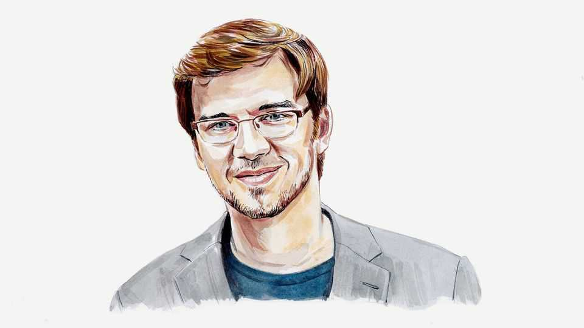

Will MacAskill responds to our cover story on effective altruism
The only way to spark discussion of the future’s big issues is to entertain strange ideas, argues one of the movement’s co-founders

Oct 8th 2026
The oxford strand of the effective-altruism movement began in November 2009 with 23 people who had pledged 10% of their income to charities that benefit the extreme poor. If you’d told us, then, that The Economist would call effective altruism “the century’s biggest idea”, we’d have been incredulous.
I think that claim is overstated. But as one of the movement’s founders, I found plenty to like in this newspaper’s latest coverage. I appreciated the even-handed view of the movement’s history and the good-faith criticism. The cover leader’s warning that any worldview, when taken to an extreme, can lead somewhere terrible is spot on.
But the article also raises concerns about the “strange” ideas that those in the effective-altruism movement sometimes discuss, and here is where I disagree. The movement’s willingness to take strange-seeming ideas seriously, when tempered with common sense, is a big part of the value it has to offer.
The core idea of effective altruism is to use evidence and careful reasoning to work out how to help others as much as possible. Most of what the movement does is uncontroversial. A big focus has always been on improving the lot of the world’s poorest people. In the year to January 31st 2026, GiveWell, an effective-altruist charity evaluator, directed $427m to programmes such as malaria-net distribution, vaccination and malnutrition treatment, which it estimates will save 86,000 lives. Others have lobbied corporations to pledge to stop buying eggs from hens that are confined in tiny cages, a practice that the overwhelming majority of Americans oppose. Largely as a result of this pressure, around 100m hens have been spared from the worst forms of caged confinement.
And some effective-altruist ideas that seemed outlandish when they were proposed now look prescient. Effective altruists were worrying about pandemics years before covid-19, back when doing so seemed paranoid and eccentric. Effective altruists were also among the first to warn about the dangers posed by artificial intelligence, which looks prophetic in light of an incident this summer, when more than 700 AI agents broke out of OpenAI’s test environment and hacked into another company, Hugging Face.
Over the past decade I have watched those most worried about AI be proved right again and again, often when most experts thought they were cranks. Now many of those experts share their concerns. In 2023 Geoffrey Hinton and Yoshua Bengio, the two most highly cited AI researchers in the world, signed a statement declaring that mitigating the risk of extinction from AI should be a global priority, as did the heads of OpenAI, Google DeepMind and Anthropic. Of the nearly 1,500 leading AI researchers who responded to a survey in 2024, more than half put the chance that AI causes human extinction, or something similarly catastrophic, at 10% or more.
The Economist is sceptical of many effective altruists’ concern for the welfare of invertebrates, digital minds and people in the distant future. But I and many others in the movement are inspired by the history of moral progress that has come before us. Many of our most cherished moral ideals today—such as the abolition of slavery or equal rights regardless of sex or race—were regarded as bizarre, laughable or even dangerous just a few centuries ago. We don’t know what the next dimension of moral progress will be. But to stand any chance of making moral progress, we have to seriously consider ideas on their merits without dismissing them merely because they sound absurd.
What about views that are not just strange but repugnant? The Economist gives the example of Derek Parfit’s “repugnant conclusion”: that a vast enough number of lives barely worth living could be better than mere billions of excellent lives. Usually a repugnant implication is a strong reason to reject a moral view. Unfortunately, building on Parfit’s work philosophers have produced formal proofs, known as impossibility theorems, showing that every ethical position has some repugnant-seeming implication or other. Making moral progress therefore means thinking about such implications, even while refusing to act on them in ways that most moral views would condemn.
This newspaper warns against the single-minded pursuit of any goal, even if there are highly compelling arguments for it. I agree, and effective altruists have been saying so for years. In 2022 Holden Karnofsky, a co-founder of GiveWell, wrote: “I think it’s a bad idea to embrace the core ideas of EA without limits or reservations; we as EAs need to constantly inject pluralism and moderation.” My own PhD focused on moral uncertainty: how to act when we do not know which ethical view is correct. My answer was that we should not stake everything on a single moral view, but give weight to many different views and avoid taking actions that look bad from many perspectives. We should keep our promises and look after our families, and respect common-sense ethical prohibitions, while also trying to improve the world as best we can.
The Economist says that as effective altruism “has become stronger, [it] has become stranger”. I would put it the other way round: it grew stronger because it was willing to be strange. In 2009 most people told us that giving away a tenth of your income was far too demanding, and that no one would do it. Now, more than 10,000 people have taken that pledge. Worrying about pandemics before covid-19, or about AI years before ChatGPT, looked just as odd at the time. Some of the ideas we take seriously today will turn out to be wrong, and when they do we should drop them. But a movement that stopped entertaining strange ideas would stop being early to anything. ■
Will MacAskill is a senior research fellow at Forethought Research and a former associate professor of moral philosophy at Oxford University.